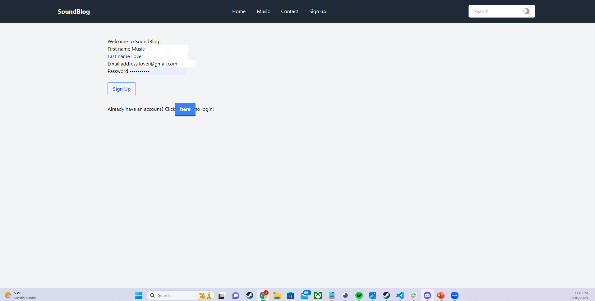

SoundBlog
SoundBlog is an application created by myself and a group for project 2. It takes elements from soundcloud and spotify, but more user communication based. You can add music to your favorites, and comment on others added favorites.
This page is dedicated to the projects I've created using different programming languages. As someone who has always used computers, and has a curious mind to the inner workings of applications, websites, and games, I'm excited to expand my knowledge and continue the process of learning and growing. I am currently enrolled in the full stack web development course ran through the Berkeley-Extension.
This project was centered around refactoring code for a webpage, with priorities being link functionality and ensuring browser optimisation.
SoundBlog is an application created by myself and a group for project 2. It takes elements from soundcloud and spotify, but more user communication based. You can add music to your favorites, and comment on others added favorites.
TurnUp is project constructed by Jeremy McCarter, Siddharth Dravid, Adrian Mora, and George Semfield. The idea behind this app is an application that will allow the user to search their favorite artist, and using fetch requests will return a list of all the live events that artist has scheduled, and an Artist Summary, including top tracks, albums and a biography. Their is also a function to save events to local storage, and to narrow search results by zip code. This was made using html, css, and js.